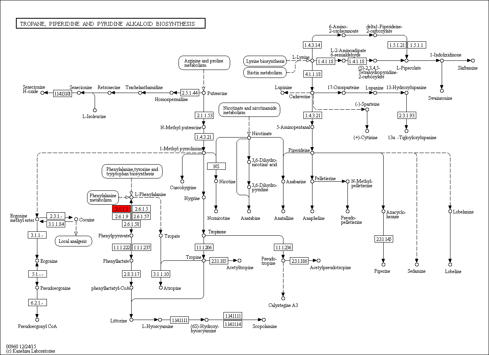

Tropane, piperidine and pyridine alkaloid biosynthesis - Oryza sativa japonica (Japanese rice) (RefSeq)
[
Pathway menu
|
Organism menu
|
Pathway entry
|
Download KGML
|
User data mapping
]
Reference pathway
Reference pathway (KO)
Reference pathway (EC)
Reference pathway (Reaction)
-----< Set personalized menu >-----
-----< Sort below by alphabet >-----
Arabidopsis thaliana (thale cress)
Ricinus communis (castor bean)
Populus trichocarpa (black cottonwood)
Vitis vinifera (wine grape)
Oryza sativa japonica (Japanese rice) (RefSeq)
Sorghum bicolor (sorghum)
Zea mays (maize)
Physcomitrella patens subsp. patens
Chlamydomonas reinhardtii
Volvox carteri f. nagariensis
Ostreococcus lucimarinus
Cyanidioschyzon merolae
184%
150%
122%
100%
82%
67%
55%

 Tropane, piperidine and pyridine alkaloid biosynthesis - Oryza sativa japonica (Japanese rice) (RefSeq)
Tropane, piperidine and pyridine alkaloid biosynthesis - Oryza sativa japonica (Japanese rice) (RefSeq)
 Tropane, piperidine and pyridine alkaloid biosynthesis - Oryza sativa japonica (Japanese rice) (RefSeq)
Tropane, piperidine and pyridine alkaloid biosynthesis - Oryza sativa japonica (Japanese rice) (RefSeq)